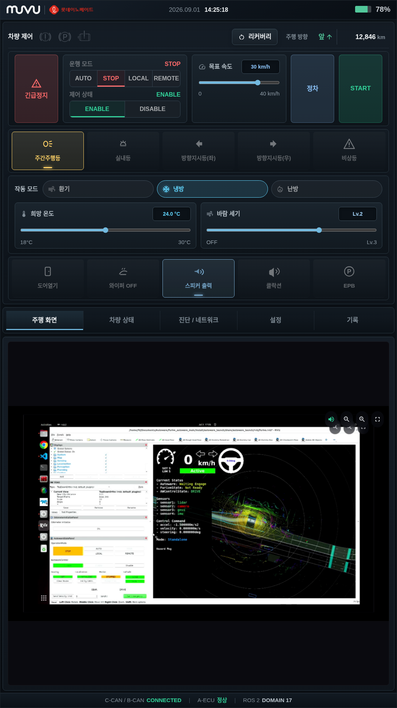
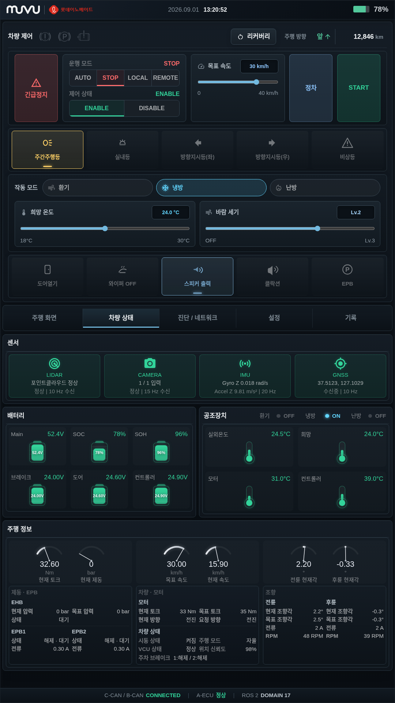
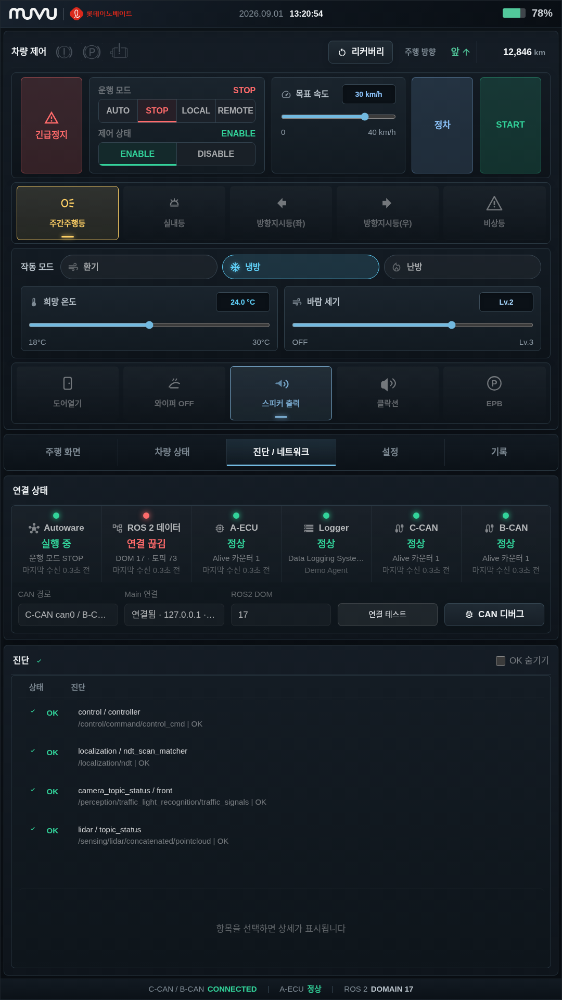
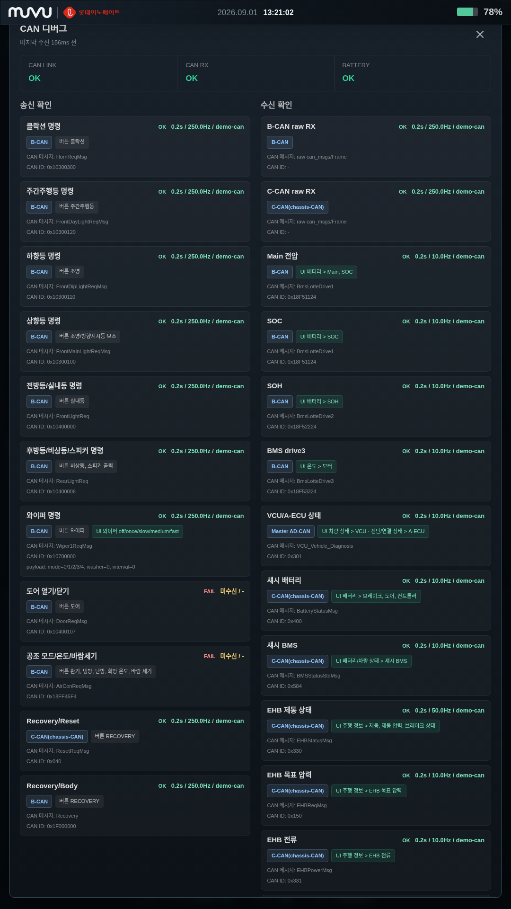
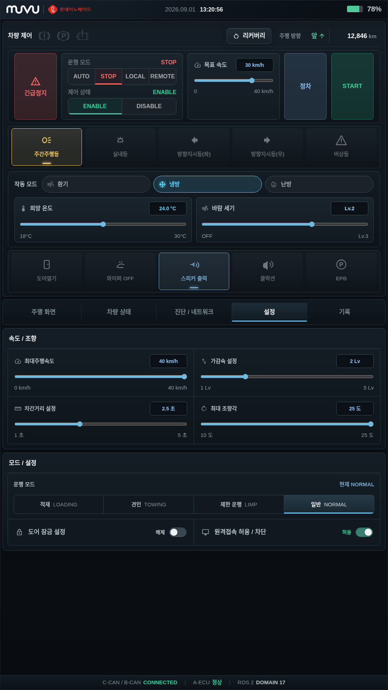
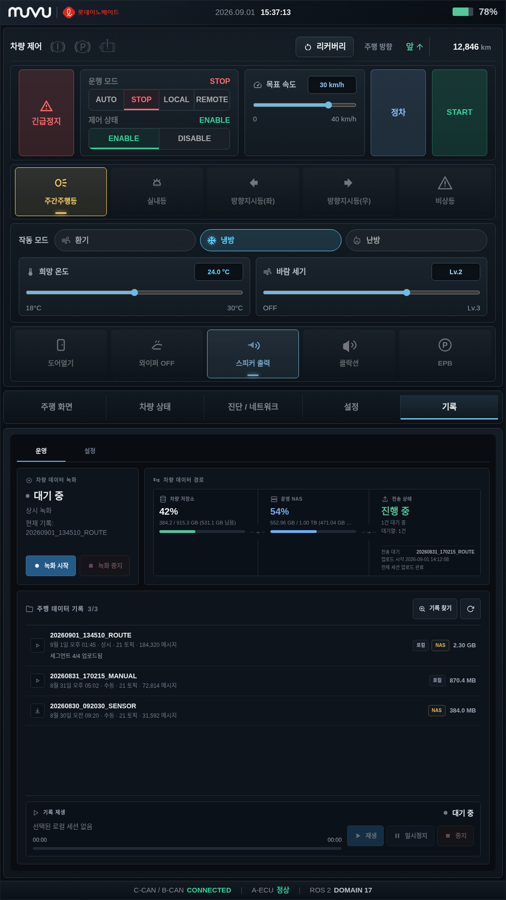
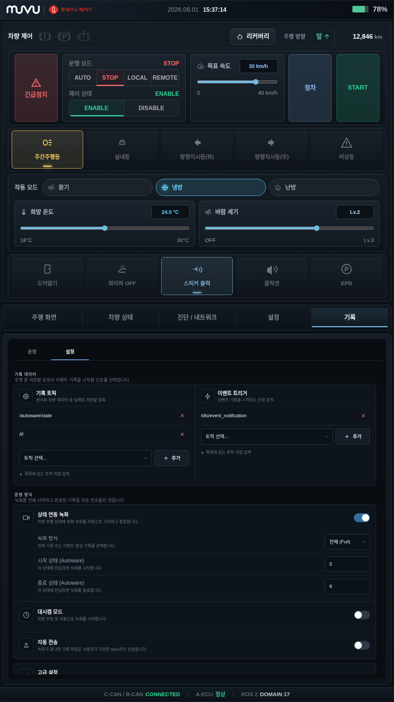
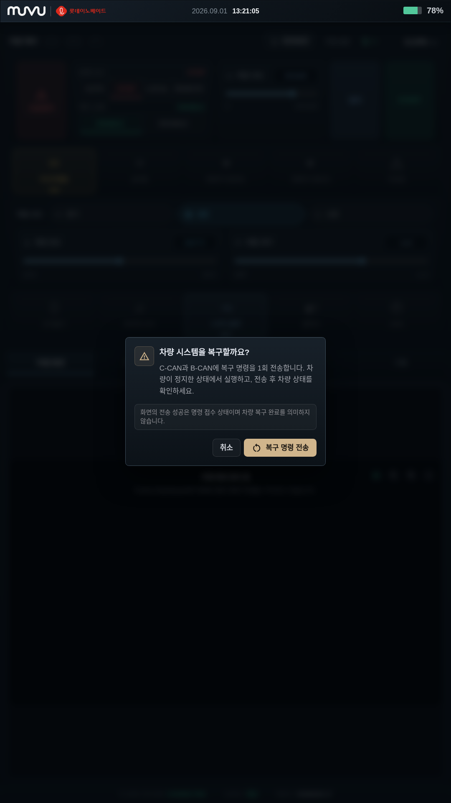

MGMT 사용 가이드¶
MGMT는 차량의 상태, Autoware 운행 상태, ROS2·CAN 연결, 센서와 차량 장치를 한 화면에서 확인하고 허가된 명령을 보내는 edge 운용 화면입니다. 단순 모니터가 아니라 차량 정차·긴급정지·조명·공조 등의 실제 명령 경로를 포함하므로, 교육받은 운용자만 차량 주변이 안전한 상태에서 사용합니다.
오프라인 배포용 편집본은 MGMT PDF 사용 설명서입니다. PDF에는 화면 요소별 번호 마킹, RViz 원격 모니터, 정상 작업 순서와 복구 판단표가 포함됩니다.
1. 시작과 종료¶
차량 설치 묶음의 ./bootstrap.sh를 완료하면 MGMT는 edge 로그인 뒤 자동으로 시작합니다. 평소에는 별도
명령을 입력하거나 main/edge 역할을 다시 고르지 않습니다.
화면이 열리지 않을 때만 다음 순서로 확인합니다.
설치 역할은 자동으로 사용됩니다. 창을 닫기 위해 프로세스를 강제 종료하거나 알 수 없는 포트 소유자를 종료하지 않습니다. 다시 시작하기 전에는 로그에서 MGMT 화면만 문제인지 공통 edge service 문제인지 구분합니다.
정상 종료가 필요하면 운행을 끝내고 차량이 정지한 상태에서 운영 절차에 따라 edge service를 정지합니다.
2. 먼저 지킬 안전 원칙¶
주의
MGMT의 START, 정차, 긴급정지, 긴급정지 해제, 운행 모드, 제어 상태와 차량 장치 버튼은 실제
명령으로 연결됩니다. 화면 촬영이나 교육 목적으로 실차 화면에서 버튼을 시험하지 않습니다.
- 차량 주변, 탑승자, 정비 작업자와 장애물을 육안으로 먼저 확인합니다.
- 차량이 정지했고 수동 운전자 또는 안전 요원이 즉시 개입할 수 있을 때만 설정을 바꿉니다.
- 흐리게 비활성화된 버튼을 반복해서 누르지 않습니다. 필요한 상태 신호가 없거나 정책상 차단된 상태입니다.
정차는 정상 감속·정차 요청이고긴급정지는 비상 명령입니다. 두 기능을 같은 용도로 사용하지 않습니다.- 화면의 명령 전송 성공은 차량 동작 완료가 아닙니다. 상태 신호와 현장 결과를 다시 확인합니다.
- RViz와 센서 표시는 관측 보조 자료입니다. 사람의 안전 판단과 차량의 물리적 상태를 대신하지 않습니다.
3. 전체 화면 읽기¶
MGMT는 위에서 아래로 다음 영역을 항상 유지하고, 하단 탭의 내용만 바뀝니다.
- 상단 바: 화면 식별, 날짜·시간, 주 배터리 SOC를 표시합니다.
- 차량 제어: 리커버리, 주행 방향·주행거리, 긴급정지, 운행 모드, 제어 상태, 목표 속도, 정차와 START/STOP을 표시합니다.
- 등화 제어: 주간주행등·실내등·좌우 방향지시등·비상등의 요청과 현재 상태를 보여 줍니다.
- 공조 제어: 환기·냉방·난방, 희망 온도와 바람 세기를 조정합니다.
- 차체 제어: 도어, 와이퍼, 스피커, 클락션과 EPB 상태를 표시합니다. 흐린 항목은 신호 또는 권한이 준비되지 않은 상태입니다.
- 화면 탭:
주행 화면,차량 상태,진단 / 네트워크,설정,기록사이를 이동합니다. - 하단 통신 바: C-CAN/B-CAN, A-ECU와 ROS2 domain의 요약 상태를 계속 표시합니다.
날짜·시간을 누르면 달력이 열립니다. 달력은 확인용이며 차량 시간 동기화 정책을 바꾸지 않습니다.
4. 주행 화면과 RViz¶
주행 화면은 상단 차량 제어와 하단 원격 모니터를 함께 보여 줍니다. 원격 모니터에는 Furive Dashboard가
전달하는 RViz의 지도·포인트클라우드·경로·Autoware 상태 패널이 표시됩니다.

원격 모니터 오른쪽 위 버튼은 다음 용도입니다.
- 스피커: HDMI capture 오디오를 현재 실행에서 켜거나 끕니다.
- 축소·확대: 원격 화면 배율을 조정합니다.
- 전체화면: RViz 영역만 확대하고 다시 누르면 원래 MGMT 화면으로 돌아옵니다.
RViz 전체 화면은 원래 비율로 표시됩니다. 확대 전에도 좌우 도구·상태 패널과 하단 상태가 잘리지 않고 함께
보이는지 확인합니다. 주행 화면 준비 중이 계속 보이면 RViz가 꺼졌다고 단정하지 않습니다. MGMT UI는 살아 있지만 Dashboard의
remote monitor surface 또는 HDMI capture 연결이 아직 준비되지 않았을 수 있습니다. 먼저 진단 / 네트워크의
Autoware·ROS2 상태를 확인한 뒤 furive status와 service 로그로 연결 경계를 좁힙니다.
5. 차량 상태¶
차량 상태는 제어 버튼을 누르기 전에 실제 입력이 일관적인지 확인하는 화면입니다.

- 센서: LiDAR, Camera, IMU, GNSS의 정상 여부, 입력 수, 주기와 주요 값을 확인합니다.
- 배터리: Main 전압, SOC, SOH와 브레이크·도어·컨트롤러 전압을 비교합니다.
- 공조장치: 현재 작동 모드, 실내·희망 온도, 모터와 컨트롤러 온도를 봅니다.
- 주행 정보: 토크, 제동 압력, 현재·목표 속도, 전륜·후륜 조향각을 게이지로 확인합니다.
- 상세값: EHB·EPB, 모터, VCU, 조향의 현재/목표 또는 현재/요청 값을 같은 묶음에서 대조합니다.
정상 색상 하나만 보지 말고 서로 관련된 값을 함께 봅니다. 예를 들어 현재 속도는 움직이는데 GNSS와
localization이 갱신되지 않거나, 목표 토크와 현재 토크가 장시간 일치하지 않으면 주행을 시작하지 않습니다.
CAN 표시값은 마지막 수신 후 10초가 지나면 만료됩니다. 만료 뒤 초기값이나 CAN 미수신으로 돌아가는 것은
오래된 값을 정상값처럼 유지하지 않기 위한 동작입니다.
6. 진단 / 네트워크¶
이 화면은 장애를 연결 → 진단 항목 → 세부 소유자 순서로 좁힐 때 사용합니다.

연결 상태 카드의 의미는 다음과 같습니다.
| 카드 | 정상 판단 | 이상일 때 첫 확인 |
|---|---|---|
| Autoware | furive-launcher runtime이 실행 중이고 현재 실행의 상태 토픽이 수신됨 |
Launcher 상태와 로그 |
| ROS2 데이터 | rosbridge/telemetry가 현재 domain에서 계속 수신됨 | ROS domain, bridge 연결 |
| A-ECU | VCU diagnosis heartbeat counter가 계속 변함 | main VCU·domain bridge·Zenoh |
| Logger | 대상 edge와 Dashboard가 연결되고 Data Logging System package가 running | package 상태와 edge 연결 |
| C-CAN | Motor3Status2.count가 계속 변함 |
chassis CAN interface와 bridge |
| B-CAN | AVASStatusMsg.count가 계속 변함 |
body CAN interface와 bridge |
Autoware가 꺼져 있으면 과거 transient 상태가 남아 있어도 꺼짐으로 표시하고 제어를 비활성화합니다. 재시작
뒤에는 현재 runtime에서 새 상태를 받은 후에만 다시 활성화됩니다. runtime은 실행 중인데 관련 상태만 10초
이상 갱신되지 않으면 상태 수신 정체로 구분합니다.
진단 목록에서 항목을 선택하면 상세 메시지를 확인할 수 있습니다. OK 숨기기는 조사 대상을 줄일 뿐 진단
상태를 바꾸지 않습니다.
CAN 디버그¶
CAN 디버그는 일반 운행 화면이 아니라 정비·개발 증거 화면입니다.

- 왼쪽은 버튼 요청과 대응 CAN 송신, 오른쪽은 수신 메시지와 UI 필드 매핑입니다.
OK는 해당 CAN 메시지가 정해진 주기로 관측됐다는 뜻이며 차량 기능 전체의 정상 판정이 아닙니다.MISS또는FAIL이면 같은 버튼을 실차에서 반복하지 말고 CAN link, bus, message ID와 마지막 수신 시간을 먼저 확인합니다.
7. 설정¶
설정은 정차 상태에서 승인된 운용값만 바꾸는 화면입니다.

| 항목 | 기능 | 주의 |
|---|---|---|
| 최대주행속도 | 운용 상한 속도 | 현장 제한과 release 기준을 넘기지 않음 |
| 가감속 설정 | 응답 수준 | 탑승감·제동거리 검증 없이 올리지 않음 |
| 차간거리 설정 | 시간 기반 추종 간격 | 속도와 환경을 함께 고려 |
| 최대 조향각 | 조향 제한 | 승인된 플랫폼 조향 한계를 넘기지 않음 |
| 운행 모드 | 적재·견인·제한 운행·일반 | 실제 차량 상태와 일치할 때만 선택 |
| 도어 잠금 설정 | 도어 잠금 요청 | 승하차와 정비 상태 확인 |
| 원격접속 허용 / 차단 | 현재 장비의 원격접속 service 제어 | 기존 세션이 즉시 종료될 수 있음 |
원격접속 차단은 현재 세션 종료와 관련 service 정지를 요청합니다. Autoware 제어 또는 목표 속도 입력을 대신 비활성화하지 않으므로, 원격접속 차단을 차량 안전 정지 수단으로 사용하지 않습니다.
8. 기록¶
기록 탭은 독립 package인 Data Logging System(DLS)의 Dashboard surface를 iframe으로 MGMT 안에 표시합니다.
MGMT가 녹화·세션·업로드 정책을 소유하거나 복제하는 구조가 아닙니다.

운영 탭¶
운영에서는 녹화 상태와 녹화 시작·녹화 중지, 차량 저장소, 운영 NAS, 전송 상태, 세션 목록과 기록 재생을
한 화면에서 확인합니다. 전송 상태에는 진행 중 파일, 대기·실패 건수와 최근 완료가 함께 표시되어야 합니다.
버튼 입력만으로 완료를 판단하지 말고 녹화 상태·세션 이름·경과 시간 또는 전송 진행률·위치 badge가 실제로
바뀌는지 확인합니다.
설정 탭¶

| 요소 | 기능 | 변경 전 확인 |
|---|---|---|
| 기록 topic | rosbag에 실제 저장할 ROS 2 topic 목록 | 이름·type·발행 주기와 분석 의존성 |
| event trigger | 이벤트 기록을 시작시키는 신호 topic | 중복 event와 실제 발행 여부 |
| 상태 연동 녹화 | Autoware state로 자동 시작·종료 | 정비 상태에서 시작·종료 각 1회 |
| 녹화 방식 | 전체(Full) 또는 이벤트 중심 기록 | 수집 범위·저장량·운용 목적 |
| 시작·종료 상태 | 자동 녹화 경계 state | 플랫폼에서 승인한 state 값 |
| 대시캠 모드 | 차량 부팅 뒤 자동 녹화 | 상태 연동과 동시 활성화 금지 |
| 자동 전송 | 완료 세션을 NAS 대기열에 등록 | 대상 NAS·보존·반출 정책 |
topic과 자동 정책은 개발자가 실제 ROS graph와 플랫폼 state를 확인한 뒤 변경합니다. NAS endpoint, 인증, metadata, 변환과 보존 설정의 전체 절차는 DLS 사용 가이드를 따릅니다.
정상 화면에는 위 이미지처럼 DLS의 운영·설정, 저장소·세션·재생 영역이 표시됩니다. 기록 화면 연결 대기 중이
계속 보이면 최종 사용 화면으로 보지 말고 iframe surface와 DLS가 실제로 준비되지 않은 상태로 판단합니다.
진단 / 네트워크의 Logger, edge 연결과 data-logging-system package 상태를 차례로 확인합니다.
기록·영상·위치 데이터에는 개인정보나 운행 정보가 포함될 수 있으므로 승인된 보존·반출 절차만 사용합니다.
9. 정상 운행 순서¶
출발 전¶
- 차량 주변과 탑승자 상태를 확인하고 수동 개입 수단을 준비합니다.
- 하단 C-CAN/B-CAN, A-ECU와 ROS2 domain이 의도한 값인지 확인합니다.
차량 상태에서 센서, 배터리, 현재 속도, 조향과 제동값이 실제 정지 상태와 일치하는지 봅니다.진단 / 네트워크에서 Autoware, ROS2, A-ECU와 필수 CAN이 정상인지 확인합니다.- RViz에서 지도, localization, perception과 경로가 현재 차량·현장과 일치하는지 확인합니다.
- 운행 모드, 제어 상태와 목표 속도를 승인된 값으로 맞춥니다.
시작¶
- 경로가 준비되고 전방이 안전한지 확인합니다.
- Autoware lifecycle과 현재 상태 신호가 살아 있어 버튼이 활성화됐는지 확인합니다.
- 의도한
AUTO운행 모드와 제어ENABLE상태를 대조합니다. - 목표 속도를 현장 제한 안에서 설정합니다.
START를 한 번 누르고, 화면 피드백과 실제 차량 상태가 함께 바뀌는지 확인합니다.
START는 Autoware의 autonomous 전환 service를 요청합니다. 화면이 바뀌지 않으면 반복 클릭하지 말고 현재
operation mode와 service 응답을 확인합니다.
정상 정차와 종료¶
- 정상 감속 정차가 목적이면
정차를 사용합니다. - 차량이 멈추고 속도·제동·운행 상태가 일치하는지 확인합니다.
- START/STOP의
STOP으로 operation mode를 정지 상태로 전환합니다. - 필요하면 제어 상태를
DISABLE로 전환하고 운영 종료 점검을 수행합니다.
| 단계 | 화면에서 확인할 결과 | 완료로 보지 않는 상태 |
|---|---|---|
| 출발 준비 | 현재 신호가 갱신되고 차량·진단·RViz가 같은 위치와 정지 상태를 가리킴 | 과거 값, 미수신, RViz 잘림·검은 화면 |
| START 요청 | operation mode 응답과 실제 차량 상태가 함께 전환됨 | 버튼 색만 바뀌거나 응답이 없음 |
| 정상 정차 | 실제 차량 정지, 속도 0, 제동·운행 상태가 서로 일치함 | 화면 속도만 0이거나 차량이 계속 움직임 |
| 운행 종료 | STOP과 필요한 DISABLE이 확인되고 기록 작업까지 종료됨 | 전환 중, 기록 중, 미확인 경고가 남음 |
10. 긴급정지와 리커버리¶
긴급정지¶
긴급정지는 즉시 비상 상태로 전환될 수 있으므로 확인 대화상자를 한 번 더 거칩니다. 주변과 탑승자를 확인한
뒤에만 승인합니다. 비상 상태는 계속 유지되며, 원인이 제거되고 안전이 확인된 뒤 별도의 긴급정지 해제를
사용합니다. 해제 후 바로 재출발하지 말고 진단과 차량 상태를 다시 확인합니다.
차량 시스템 리커버리¶

- 차량이 완전히 정지했고 복구를 실행해도 안전한지 확인합니다.
리커버리를 누르고 설명을 읽습니다.- C-CAN과 B-CAN에 복구 명령을 한 번 보내려면
복구 명령 전송을 누릅니다. - 전송 결과와 별개로 차량 상태, alive counter, 경고와 실제 장치 동작을 다시 확인합니다.
화면의 복구 명령을 전송했습니다는 명령 접수 결과이며 복구 완료 판정이 아닙니다. 실패하면 CAN 연결을
확인하고 원인을 기록한 뒤 정비 절차로 이동합니다.
11. 문제 해결¶
| 증상 | 먼저 확인 | 다음 조치 | 하지 않을 것 |
|---|---|---|---|
| 창이 열리지 않음 | furive status, package 로그, 그래픽 세션 |
MGMT package만 다시 실행 | 임의 Electron/Chrome 전체 종료 |
| RViz 영역이 검음 | Autoware·ROS2, Dashboard remote monitor surface, HDMI capture | 연결 소유자 로그 확인 | 검은 화면에서 START |
| 버튼이 흐리거나 안 눌림 | 현재 runtime 신호, emergency, transition 상태 | 필요한 상태 수신을 복구 | 반복 클릭·DOM 강제 조작 |
CAN 미수신 |
마지막 수신 시간, C-CAN/B-CAN, bridge | interface와 heartbeat 확인 | 오래된 표시값으로 운행 |
Autoware 꺼짐 |
Launcher runtime | 주행 준비 화면과 Launcher 로그 | retained topic만 보고 정상 판정 |
상태 수신 정체 |
현재 runtime 시작 시각 이후의 상태 토픽 | rosbridge/telemetry 확인 | 과거 상태 재사용 |
| Logger 비정상 | edge 연결, Data Logging System running | package와 Dashboard 연결 복구 | 기록 성공으로 간주 |
| 복구 전송 실패 | CAN link와 송신 권한 | 원인 기록 후 정비 | 연속 복구 명령 |
12. 보안과 운행 확인¶
- 기본 지도 패널은 외부 tile service에 차량 좌표를 보내지 않는 로컬 배경을 사용합니다.
- 원격접속은 현재 장비의 access-control 경계를 통해서만 허용·차단합니다. 공용 계정이나 공유 credential을 화면·문서·저장소에 남기지 않습니다.
- 기록과 원격 화면에는 위치, 탑승자 또는 운영 정보가 포함될 수 있습니다. 승인된 저장소와 반출 경로만 사용합니다.
- 화면의
OK는 실제 차량의 물리 동작을 뜻하지 않습니다. 운행 판단은 현재 상태 신호와 현장을 함께 확인합니다.
운행 전 최소 확인표:
- [ ] 현재 차량 ID·플랫폼·ROS domain이 의도한 대상이다.
- [ ] 차량은 실제 정지 상태이며 현재 속도·조향·제동 표시가 일치한다.
- [ ] Autoware·ROS2·A-ECU·필수 CAN의 현재 신호가 살아 있다.
- [ ] RViz 지도·localization·경로가 현재 위치와 일치한다.
- [ ] 경고·진단 항목을 확인했고 운행을 막는 ERROR가 없다.
- [ ] 목표 속도·운행 모드·제어 상태가 승인된 값이다.
- [ ] 안전 요원과 수동 개입 수단이 준비됐다.
13. 기술 구조와 프로토콜¶
운용자가 화면의 의미를 확인해야 할 때만 아래 경계를 참고합니다.

main의 Autoware ROS 2 domain 17에서 승인된 경로만 ROS Domain Bridge를 거쳐 shadow domain 232로 들어가고,
Zenoh Bridge가 QUIC/UDP :7447의 TLS 1.3 mTLS로 edge에 전달합니다. 설치가 배포한 node certificate를 서로
검증하고 exact peer-CN ACL을 적용하며, 일반 TCP Zenoh endpoint와는 호환되지 않습니다.
MGMT Telemetry Bridge는 edge ROS 2/CycloneDDS domain을 직접 구독해 최신 snapshot을 한 줄에 JSON object 하나인 newline-delimited JSON으로 Electron child-process stdout에 보냅니다. Electron main process는 이를 parse한 뒤 신뢰된 renderer에 IPC로 전달합니다. 차량 명령은 반대로 renderer sender 검사 → Electron IPC → Telemetry Bridge stdin JSON → ROS publish/service 순서입니다. 이 stdio·IPC는 같은 MGMT process tree 내부 연결이므로 mTLS 구간이 아니며, rosbridge fallback은 기본적으로 꺼져 있습니다.
Furive OS main↔edge heartbeat·package 상태·명령/응답은 Zenoh와 별도의 TCP :15001/TLS 1.3 mTLS 제어면입니다.
MGMT의 DLS iframe은 같은 edge의 Dashboard가 발급한 loopback surface이고, 이 경로가 PC 사이 mTLS를 대신하지
않습니다.
| MGMT 동작 | 연결 경계 |
|---|---|
| START | /api/operation_mode/change_to_autonomous service |
| START/STOP의 STOP | /system/operation_mode/change_operation_mode에 STOP 요청 |
| 정차 | /vehicle/external/graceful_stop |
| 긴급정지·해제 | /api/autoware/set/emergency |
| 목표 속도 설정·조회 | /planning/scenario_planning/max_velocity_default, current_max_velocity |
| Autoware 실행 여부 | lifecycle 소유자인 furive-launcher runtime |
| 기록 화면 | Data Logging System이 제공하는 Dashboard surface |
세부 CAN·ROS·UI 필드 매핑은 package의 docs/ros-can-topic-mapping.md와
docs/ui-signal-mapping.md가 소유합니다. 일반 운행 중에는 이 내부 이름을 외울 필요가 없습니다.